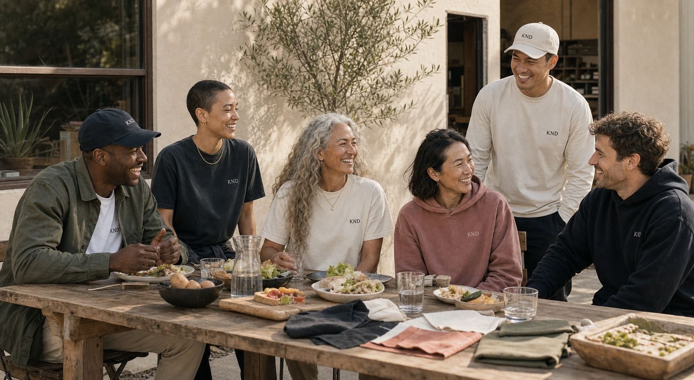
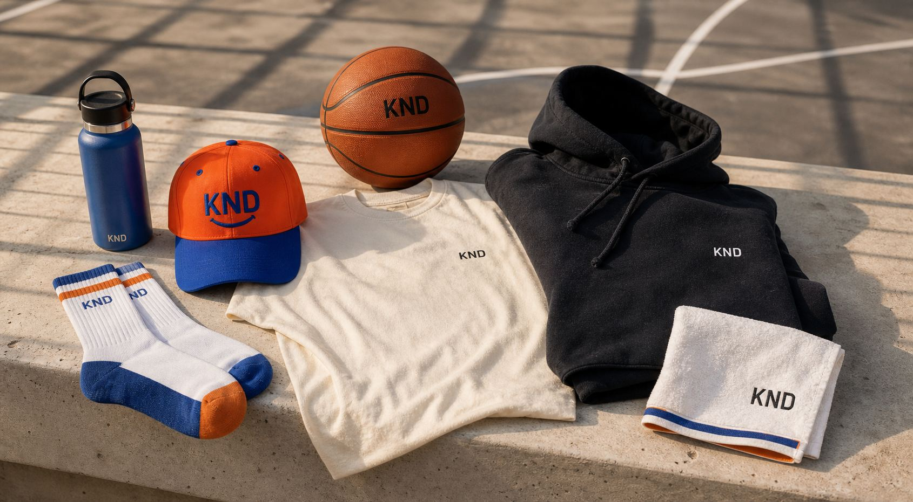
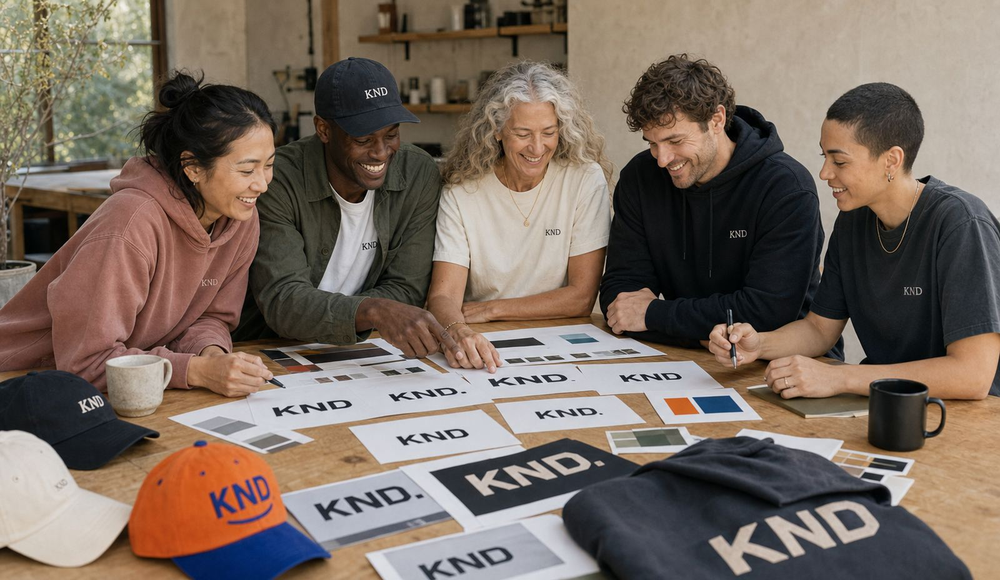

Wear what you believe.
KND
Making kindness visible, wearable, and culturally relevant.
The North Star
Make kindness culturally relevant.
KND is not a campaign and not nonprofit merchandise. It is a modern lifestyle brand for people who want what they wear to reflect what they believe.
The invitation is simple: be part of something optimistic, human, and visible in everyday culture.
Culture
Kindness belongs in the places people already gather: sport, music, school, work, family, and the street.
Community
The brand should feel like recognition. You see it on someone else and know you are in it together.
Commerce
Products must be desirable first. The mission deepens the bond after the object earns its place.
Impact
Every purchase should help trigger more visible, trackable, participatory kindness in the world.
Lifestyle First
Product should be seen inside the life of the brand.
The shop direction now pulls from apparel, kids, and sports moments instead of isolated concept renders. Each item should feel like a cropped proof of the world KND belongs in.
Explore product direction

Activation Engine
KND should be experienced, not simply purchased.
- Kindness Walls
- Photo Booths
- Community Storytelling
- Live Kindness Counters
- Interactive Installations

Impact Philosophy
Visible. Measurable. Contagious.
The long-term opportunity is a living kindness engine: purchases, partnerships, and activations that trigger real-world acts people can see and join.
View brand system